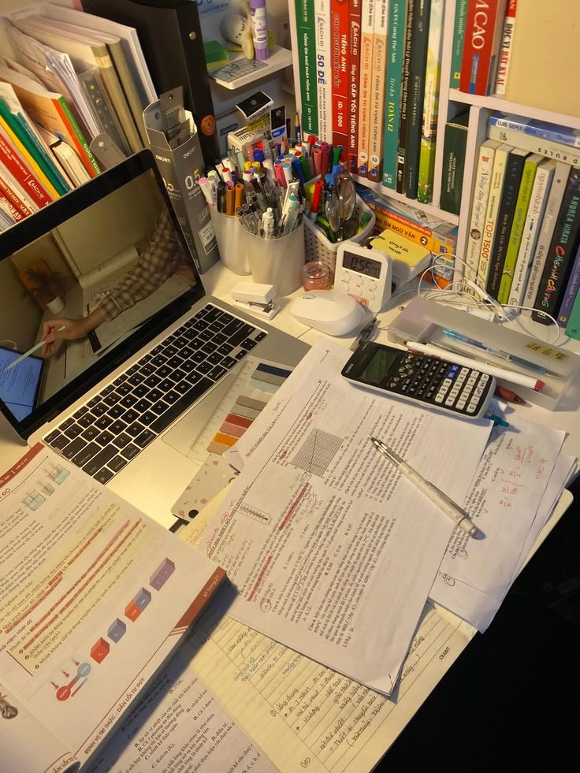

ACADEMY
Selamat datang di Lumora Academy, tempat untuk mengenal berbagai bidang pembelajaran, menemukan minat, dan mengembangkan pengetahuan dengan cara yang menyenangkan.

Lumora Academy merupakan konsep platform katalog pembelajaran yang menghadirkan berbagai pilihan materi dalam satu tempat.
Kami menghadirkan beberapa bidang pembelajaran, mulai dari mata pelajaran umum hingga teknologi dan informatika, agar pengunjung dapat mengenal materi sesuai minatnya.
Dengan tampilan yang sederhana dan materi yang terstruktur, Lumora ingin menjadikan proses mengenal pengetahuan terasa lebih mudah dan menarik.
Hal yang menjadi dasar pengembangan Lumora Academy.
Menjadi platform katalog pembelajaran yang menarik, mudah dipahami, dan membantu pengunjung mengenal berbagai bidang ilmu.
Menyediakan informasi pembelajaran yang terstruktur dan mengenalkan berbagai materi dengan penyajian yang sederhana.
Mengutamakan rasa ingin tahu, kreativitas, kemudahan belajar, dan semangat untuk terus mengembangkan pengetahuan.
Kategori pembelajaran disusun agar pengunjung lebih mudah menemukan materi yang dicari.
Tampilan menggunakan warna lembut dan tata letak yang nyaman untuk dijelajahi.
Mengenal bidang baru dan menemukan pengetahuan yang mungkin belum pernah dipelajari.
Setiap proses belajar punya cerita dan pengalaman yang berbeda.
Awalnya aku cukup kesulitan memahami matematika, terutama saat mengerjakan soal. Tapi setelah belajar dan mencoba latihan secara rutin, akhirnya aku mulai memahami cara mengerjakannya.
Belajar bahasa Inggris ternyata menyenangkan. Aku jadi lebih berani mencoba berbicara, menambah kosakata baru, dan tidak terlalu takut melakukan kesalahan.
Aku suka belajar hal baru tentang teknologi. Saat pertama kali mengenal HTML dan CSS, semuanya terasa asing. Namun, setelah mencoba membuat website sendiri, aku jadi semakin tertarik dengan dunia pemrograman.
Mulai perjalanan belajarmu dan temukan bidang yang menarik untuk dipelajari.
Explore Programs